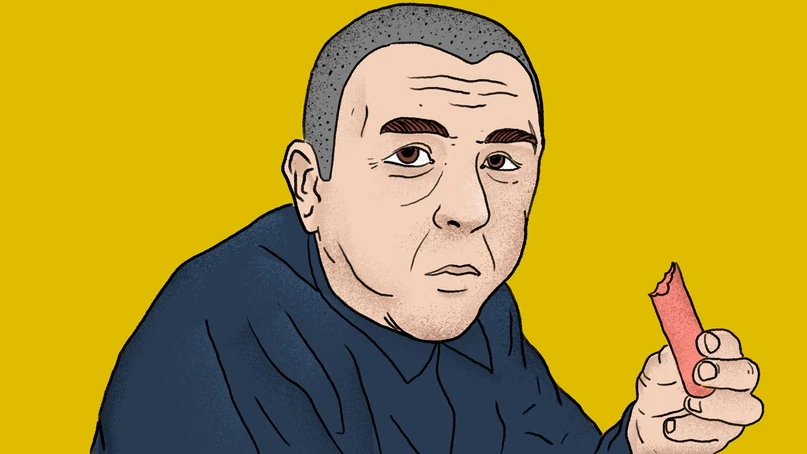

Mr. Nobody, будучи предприимчивым парнем, пробует себя в роли тюремного драгдилера
Когда я думаю о Насте, в мою голову невольно влезает фраза из «Бойцовского клуба» — «Мы встретились в странный период моей жизни». Сразу после того как она звучит, начинают играть Pixies — свой риторический Where is my mind.
Этот период действительно был странным: лагерь со всеми его омерзительными уродствами не просто окружал меня, а пытался поглотить. Однако каждые четыре месяца (иногда чаще) я был с Настей на длительном свидании — что стало моим спасением. Мне так и не удалось осознать этот невозможный контраст свободы, теплоты и чего-то светлого (словом, всего, что в себе воплощала Настя) с тем, что ожидало меня после нашей очередной встречи. Насилие, грубость и наглая требовательность моего мира не собирались оставлять меня в покое. «Будто мироздание выбрало метод кнута и пряника», — шутили мы с Настей.

В лагере я успел обзавестись знакомыми и старался поддерживать с ними теплые отношения, постепенно увеличивая уровень доверия и откровенности. Личности, знакомство с которыми было одновременно необходимо и отвратительно, тоже получали от меня какие-то блага. Коротко говоря, я не просто развивал свое двуличие — у меня было много лиц, и они ежедневно менялись. При этом я старался не выходить за рамки, которые рано или поздно любой человек ставит сам себе.
Одним из таких необходимо-отвратительных знакомств было знакомство со шнырем спортсменов, которого называли Карась. Ему было под сорок, и сидел он больше 10 лет. Представляя из себя классический образец зэка (вида, слава богу, уже вымирающего), он умудрился стать худшей его версией — беззубый, мелочно-хитрый и до нелепого тупой.
История его уголовного дела заключалась в традиционной русской бытовухе. Львиная доля приговоров содержит фразу «после совместного распития спиртных напитков». Так вот, однажды Карась после этого самого распития несколько раз ударил свою собутыльницу чайником по голове. Чайник прослужил мужику больше 10 лет и с каждым годом утяжелялся новым слоем накипи, что добавило оружию смертоносности. Почти сразу после стычки Карась и его подруга помирились, увенчав пострадавшую голову женщины бинтом. После этого они продолжили бухать, а похмельным утром Карась обнаружил, что его пассия мертва. Карася обвинили в нанесении тяжких телесных повреждений, повлекших смерть.
В шныри он попал так: ночью его поймали возле холодильника — за проглатыванием замороженных сосисок. И, как всегда в случаях с лагерным воровством (т.е. «крысятничеством»), Карася сильно избили, после чего спортсмены забрали его к себе — стирать одежду и прочее. За 10 лет тюрьма его не исправила, а только усугубила положение дел, законсервировав пороки в соусе собачьей озлобленности, которую я наблюдал в Карасе чуть ли не ежедневно, когда спортсмены в очередной раз били его за мелкую провинность. Своих угнетателей он ненавидел бешено, что находило свое выражение во всем, что Карась говорил, пока их не было рядом.
— Животные, ебаные животные! Был бы я на воле, отвечаю… — полушепотом бубнил он.
Разумеется, после освобождения Карась хотел «взять пузырь в первом же ларьке и завалиться в первом же кювете», что, по слухам, позже ему удалось.
Больше всего на свете Карась любил жрать. И был поистине всеядным — о нем ходили легенды. Постоянно попрошайничая, он умудрялся смешивать в одном стакане суп и сладкий кофе, а затем, чинно закладывая за ворот полотенце, как детский слюнявчик, доставал огромное количество хлеба и принимался за трапезу, омерзительно прихлебывая. Зэки в нашем бараке не выбрасывали ни испортившиеся продукты, ни кости — все сдавалось Карасю и беспощадно, с хрустом, им съедалось. Однажды я проснулся от того, что он слишком громко грыз огромную кость от бывшей свиной рульки, — спортсмены оставили Карасю небольшое количество зубов и процедура затянулась надолго.
Со временем я решил извлечь из его обжорства выгоду. Дело в том, что Карась прятал от ментов все запрещенные предметы, которые в изрядном количестве имелись у спортсменов. Я старался как можно чаще подкармливать Карася, а он в свою очередь благодарил меня, оказывая всякие услуги. Например, по ночам открывал мне душевую спортсменов или давал на ночь телефон одного из них.
Кстати, именно со смартфона главного качка я однажды позвонил Насте по скайпу: мы вдвоем отправились в продуктовый магазин (она якобы была немой, а я объяснялся за нее с экрана телефона), что по необъяснимой причине запомнилось мне на годы, — событие, ярко окрашенное нашим отчаянным весельем.

Карась подошел ко мне и спросил, люблю ли я курить шмаль. На свободе я пробовал только гашиш, и мне совершенно не понравилось: состояния, которые выводят из психического и физического равновесия, всегда казались мне болезненными. Честно ответив Карасю, что я, дескать, не любитель, чуть позже я решил затеять кое-что рискованное. Потому что как минимум четырех «любителей» я знал.
На следующий день я угостил Карася каким-то лакомством и, пока он шумно занимался его поглощением, завел разговор на тему наркотиков в общем и марихуаны в частности. Тем же вечером он принес мне спичечный коробок, полный травы, и попросил, чтобы я курил один: наркотик был, очевидно, украден у спортсменов. Однако раз его было так много, у этих ребят имелось более чем в достатке.
Утром, прихватив с собой коробок с травой, я отправился по своим хорошим знакомым, которых упомянул ранее. Сколько стоит трава, я понятия не имел, но знали они. Да и любая цена меня бы устроила. Каждый разговор начинался в общих чертах, постепенно приближаясь к конкретике, — в итоге рынок сбыта был налажен. Я знал, что никто из этих ребят не проговорится. Так я стал драгдилером, и какое-то время у меня неплохо получалось. Заработанные деньги шли на подкармливание Карася и на оплату адвоката, которого подыскала Настя, — последнее чуть позже принесло свои плоды.
Закончилось мое барыжничество довольно удачно — не потому, что наркотик кончился, и не потому, что мне, допустим, сломали руки, оставив в живых. Все получилось интереснее.
В жизни иногда случаются ситуации, с помощью которых мироздание дает тебе понять: бро, ну хватит. Просто нужно разглядеть этот знак.
В моем случае вышло так. Ночью я получил СМС от одного из моих «клиентов» — он находился в санчасти (лагерном госпитале) с воспалением легких. Чувак просил меня принести половинку коробка. Каждый барак в колонии огражден «локалкой» — железным забором с калиткой на замке. Та же история с санчастью.
2 января. Все еще похмельные менты отсыпаются на вахте, на улице никого нет. Стоя на заснеженной территории, я прекрасно понимал, что физически не смогу добраться до своего друга. Тут под чьими-то шагами заскрипел снег — это был зэк, работающий на вахте. Он занимался уборкой и выполнял некоторые мелкие поручения ментов (вроде приготовления чая). В каком-то смысле мужику повезло, а еще он был полезен — мог ходить, куда вздумается, — администрация относилась к нему лояльно. В моей голове созрел план.
— Эй, друг, подойди сюда, — сказал я. — Тут такое дело. У меня товарищ в санчасти, я дачку получил и хочу ему пихануть всякого. Ну, фрукты, чай, прочее. Отнесешь? Сам видишь, все закрыто, никого нет.
Чувак стоял и недоверчиво смотрел на меня.
— Я тебе сигарет дам, — говорю.
— А, ну можно. Только не слишком много, чтобы я мог спрятать за пазуху.
Я метнулся в барак. Положил в пакет четыре мандарина, две пачки сигарет (одну — посыльному, а вторую — моему платежеспособному другу), взял упаковку чая и побежал в душевую, где и закрылся. Каждый чайный пакетик лежал в маленькой непрозрачной упаковке. Две из них я заполнил травой, выкинув чайные пакетики. Затем заплавил упаковки зажигалкой и привел все в товарный вид. Потом я поспешил на улицу и вручил пакет тому чуваку.

— Как отдашь, дай мне знать! — крикнул я вслед.
Мой клиент так и не получил посылку. Когда мне удалось выцепить ублюдка посыльного, он начал отмазываться: мол, не успел донести, запарился и прочее. Самым пугающим было другое. На вопрос «Где пакет?» мудила ответил, что оставил его в оперотделе и позже отнесет туда, куда просил я.
Стоит ли говорить о том, какая паника меня охватила? Перед глазами вставала картина: оперу захотелось попить чаю (возможно, прямо в тот момент, когда долбоеб, который должен этот чай сделать, стоит напротив меня), и он открывает один из, кажется, 20 чайных пакетиков. На стол сыпется, как однажды выразился парень, куривший ее, «отборная шмаль». Кто принес пакет? Откуда? Карася забили бы палками. А следом — и меня.
В течение следующих трех недель я ждал худшего. Каждый день я думал, что вот сегодня мне пиздец. Но ничего не произошло. Подозреваю, что тот хитрый ублюдок сразу тщательно проверил посылку и, зная, что мне явно некуда идти с претензиями, скурил всю траву сам. В любом случае это показалось мне знаком. И я завязал, уверенный, что больше от судьбы предупреждений не будет.